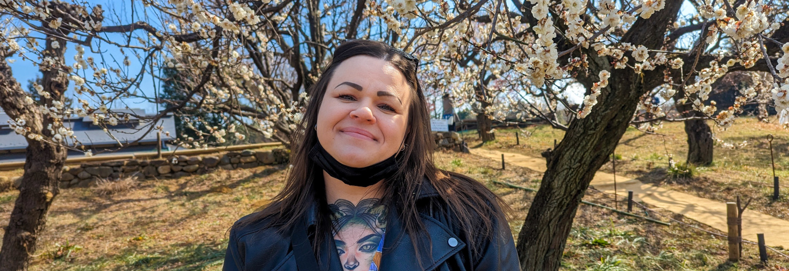

Om mig
Hej, mitt namn är Moa Söderberg. Jag är 30 år och bor för tillfället i Gävle men jag spenderar också mycket tid i Virginia, USA, där min fästman bor. Min fästman och jag befinner oss mitt i en ansöknigsprocess för ett K1-visum, även känt som ett förlovningsvisum, eftersom jag planerar att flytta till honom.
Under fyra år, fram till oktober 2023, bodde jag i Tokyo, Japan. Under den tiden studerade jag japanska vid en språkskola och informationsbehandlingsprogrammering vid en högskola. Jag avslutade min utbildning vid högskolan i slutet av september 2023 och återvände strax därefter till Sverige. Sedan dess har jag fortsatt att utveckla mina kunskaper genom att delta i olika programmeringskurser vid olika universitet i Sverige.
Efter min planerade flytt till USA har jag för avsikt att ansöka till en högskola där för att fortsätta min utbildning. Mitt mål är att antingen fokusera på webbutveckling eller programmering genom en ettårig utbildning, vilket sedan kommer att lägga grunden för mina framtida jobbansökningar i USA.
Utbildning
Kontakt
Vid eventuella frågor eller för kontakt, vänligen melja mig på moamariasoderberg@gmail.com.